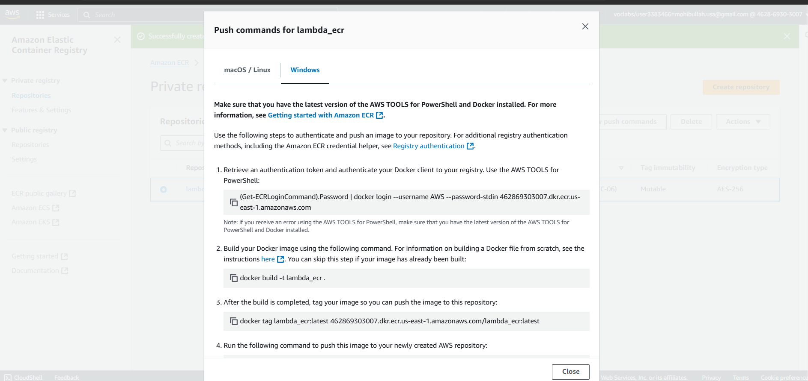
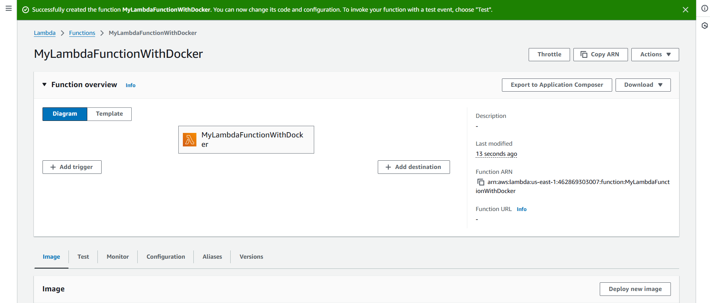
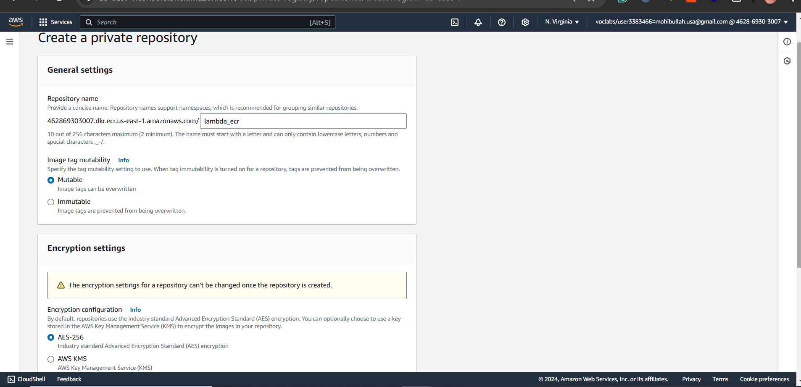
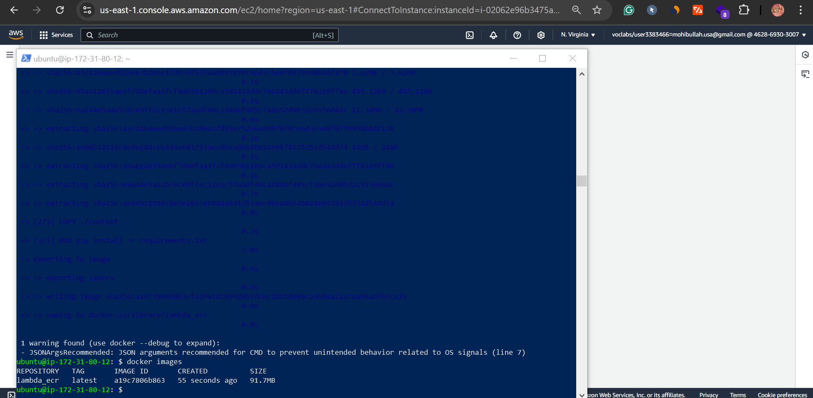
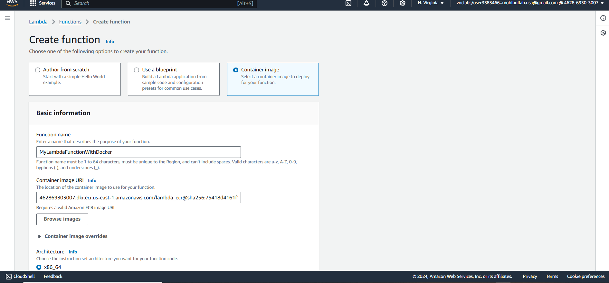
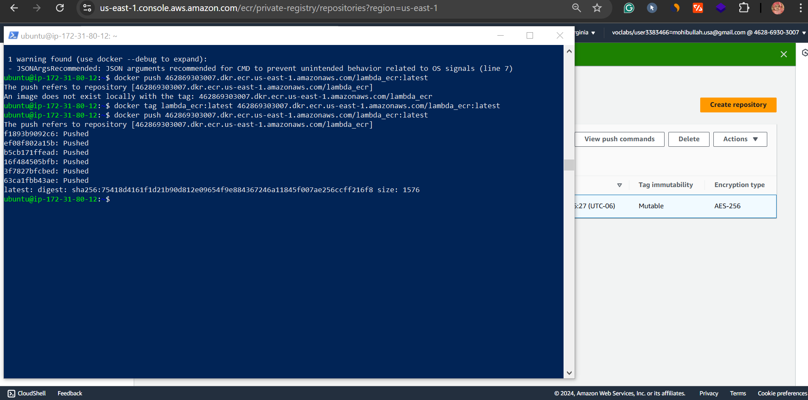

Deploying Containerized Python Apps to AWS Lambda: A Complete Guide
Published: July 2025
By: Mohibullah Rahimi
Technical Stack: AWS Lambda, ECR, Docker, Python 3.9, IAM, Alpine Linux
The Evolution of Lambda: Why Containers Matter
While AWS Lambda traditionally used ZIP deployments, container support (introduced in 2020) revolutionized serverless development by addressing key limitations:
Traditional ZIP Deployments
- 50MB package limit (250MB uncompressed)
- Dependency conflicts in runtime environments
- Limited to AWS-supported runtimes
- Manual dependency management
Container Image Advantages
- 10GB image support for large dependencies
- Consistent dev/prod environments
- Custom runtimes (e.g., Python 3.9 with specific patches)
- Existing Docker toolchain compatibility
Real-world use cases: This approach is ideal for machine learning models (TensorFlow/PyTorch), legacy apps requiring specific system libraries, or monoliths being migrated to serverless.
Architecture Deep Dive

End-to-end workflow from development to production
Key Components Explained
1. The Dockerfile
Your Dockerfile defines the execution environment. For Lambda:
# Sample Lambda-compatible Dockerfile
FROM public.ecr.aws/lambda/python:3.9
# Install system dependencies
RUN yum install -y gcc python3-devel
# Copy requirements first for layer caching
COPY requirements.txt .
RUN pip install -r requirements.txt
# Copy application code
COPY app.py .
# Set the Lambda handler
CMD ["app.lambda_handler"]

Building the Docker image
Critical notes:
- Must use AWS base images or implement the Lambda Runtime Interface
- Alpine Linux reduces image size but may need compatibility layers
- ENTRYPOINT is not supported - use CMD instead
2. IAM Permission Strategy
Least-privilege roles are critical for security:
EC2 Instance Role
AmazonEC2ContainerRegistryPowerUserAWSCloudFormationReadOnlyAccess- Optional:
AmazonS3ReadOnlyAccess
Lambda Execution Role
AWSLambdaBasicExecutionRoleAmazonS3FullAccess (if needed)AmazonDynamoDBFullAccess (if needed)

IAM role configuration in AWS Console
Security Best Practice: Always scope permissions to specific resources using ARNs rather than granting full service access.
Step-by-Step Implementation
Phase 1: Building the Container
Optimizing Docker Builds
To improve build performance and image size:
# Use multi-stage builds to minimize final image size
FROM public.ecr.aws/lambda/python:3.9 as builder
# Install build tools
RUN yum install -y gcc python3-devel
# Create virtual environment
RUN python -m venv /opt/venv
ENV PATH="/opt/venv/bin:$PATH"
# Install dependencies
COPY requirements.txt .
RUN pip install --no-cache-dir -r requirements.txt
# Final stage
FROM public.ecr.aws/lambda/python:3.9
# Copy only necessary files from builder
COPY --from=builder /opt/venv /opt/venv
COPY app.py .
# Set environment
ENV PATH="/opt/venv/bin:$PATH"
CMD ["app.lambda_handler"]
Multi-stage Dockerfile reduces image size by 60-70%
Build Command
# Build with cache and progress tracking
docker build \
--progress=plain \
--no-cache \
-t lambda_ecr .
Size Optimization
- Use
.dockerignore to exclude dev files
- Combine RUN commands to reduce layers
- Clean cache after installations
Verifying created Docker images
Phase 2: ECR Repository Setup
Creating the ECR Repository
Creating the lambda_ecr repository in AWS Console
Pushing the Docker Image
Use the ECR push commands to upload your container image:
# Authenticate Docker with ECR
aws ecr get-login-password --region us-east-1 | docker login --username AWS --password-stdin [account-id].dkr.ecr.us-east-1.amazonaws.com
# Tag and push the image
docker tag lambda_ecr:latest [account-id].dkr.ecr.us-east-1.amazonaws.com/lambda_ecr:latest
docker push [account-id].dkr.ecr.us-east-1.amazonaws.com/lambda_ecr:latest

ECR push commands from AWS Console

Successful Docker login to ECR

Successfully pushed image in ECR repository
Phase 3: Lambda Function Deployment
Creating the Lambda Function
Selecting container image option in Lambda

Configuring execution role for Lambda
Testing the Function

Function overview in AWS Console

Successful test execution results
Cold Starts: Container-based Lambda functions may have slightly longer cold start times than ZIP deployments. Consider provisioned concurrency for performance-critical applications.
Advanced Testing Strategies
Local Testing
Validate containers before ECR deployment:
# Test container locally
docker run -p 9000:8080 lambda_ecr:latest
# Invoke function
curl -XPOST "http://localhost:9000/2015-03-31/functions/function/invocations" \
-d '{"payload":"hello"}'
Benefits:
- Faster debug cycles
- No AWS costs during development
- CI/CD pipeline integration
Cloud Testing
Once deployed to Lambda:
- Cold Start Measurement:
aws lambda invoke --function-name my-function \
--invocation-type RequestResponse \
--log-type Tail output.txt
- Load Testing:
Use AWS Lambda Power Tuning tool to optimize memory allocation
- Integration Tests:
Configure test events for all code paths
Production-Ready Recommendations
CI/CD Pipeline
- GitHub Actions/AWS CodePipeline workflow
- Automated vulnerability scanning with Amazon Inspector
- Canary deployments using Lambda aliases
Performance Tuning
- Provisioned concurrency for predictable latency
- ARM/Graviton2 processors for better price-performance
- Right-size memory allocation (test with Power Tuning)
Observability
- AWS CloudWatch Logs Insights
- X-Ray tracing for distributed tracing
- Custom metrics for business KPIs
When to Choose Containers vs. ZIP
Choose Containers When:
- Dependencies exceed 250MB
- Need custom runtime versions
- Existing CI/CD uses Docker
- Require OS-level packages
Stick with ZIP When:
- Simple functions with small dependencies
- Faster cold start times critical
- No Docker expertise available
- Basic AWS-supported runtimes suffice